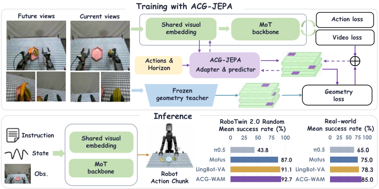
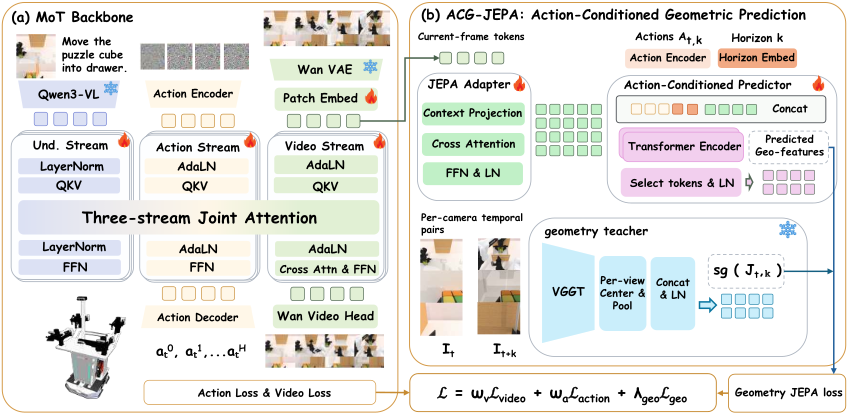

ACG-WAM: World-Action Modelingvia Action-Conditioned Geometric Latent Prediction
Method Overview

Action-Conditioned Geometric Prediction
ACG-WAM learns to predict future geometric representations from current observations and intervening actions. Our ACG-JEPA objective combines prediction over multiple horizons with geometric distillation from head and wrist cameras to train the policy’s shared visual embedding.
We evaluate ACG-WAM on 50 RoboTwin 2.0 tasks and three real-robot tasks. Ablations on six simulation tasks examine the joint geometric targets, action conditioning, and multi-horizon supervision.

ACG-WAM Architecture
Action-conditioned prediction. ACG-JEPA predicts geometric targets from current-frame features, intervening actions, and a temporal horizon. A frozen VGGT teacher jointly encodes current–future image pairs and supplies future-slot targets at multiple horizons.
Multi-view geometric distillation. Head- and wrist-camera targets supervise the MoT backbone’s shared visual embedding before temporal mixing, so the predictor’s visual input contains only the current observation. The geometric loss updates this embedding alongside the video and action objectives; the teacher and auxiliary predictor are removed at inference.
We initialize the MoT backbone from a pretrained Motus backbone checkpoint.
Real-World Demonstrations
ACG-WAM performs bimanual fruit placement, block stacking, and toy placement into a cup on TRON2 with WUJI hands. Block stacking and toy placement are shown with both the robot’s left and right arms.
Bimanual Fruit Placement
Demonstration 2
Block Stacking
Left arm
Right arm
Toy Placement into a Cup
Left arm
Right arm
RoboTwin Simulation
Demonstrations across six manipulation tasks in clean and randomized scenes.
Clean scenes, demonstration 1
Hanging Mug
Handover Mic
Move Can Pot
Place Mouse Pad
Scan Object
Open Microwave
Citation
@unpublished{liu2026acgwam,
title = {ACG-WAM: World-Action Modeling via Action-Conditioned Geometric Latent Prediction},
author = {Liu, Jiangtao and Xiang, Zishang and He, Yage and Cui, Lingguo and Zhang, Baihai and Chai, Runqi and Chai, Senchun},
year = {2026},
note = {Manuscript},
url = {https://RoboOpus.github.io/ACG-WAM/}
}